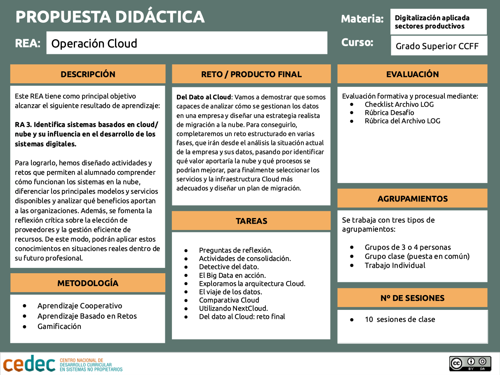

Proposta didàctica
Aquest recurs educatiu obert forma part d'un de més ampli que correspon a un curs del mòdul professional de Digitalització aplicada als sectors productius, per a cicles formatius de grau superior. S'organitza en cinc operacions que inclouen els diferents resultats d'aprenentatge del mòdul, i que permeten anar assolint diferents nivells de formació en digitalització fins a aconseguir la credencial completa que ens permet obtenir el certificat d'expert o experta en digitalització.
En aquesta operació treballem el paper del Cloud Computing com a eina estratègica per a l'empresa, tot analitzant des del valor de les dades com a actiu essencial, els diferents tipus d'emmagatzematge i serveis al núvol, fins a les alternatives lliures disponibles. A més, abordem com integrar solucions cloud en l'estratègia de digitalització, amb activitats pràctiques i un repte final que posen l'alumnat en la pell de professionals que han de decidir, organitzar i aplicar el núvol en un context real.
